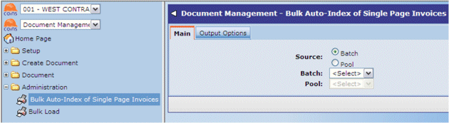

Bulk Auto-Index of Single Page Invoices allows you to index single page invoices automatically. This assumes that each scanned image is a separate invoice. (With standard invoice auto-indexing you have to explicitly state whether the current image is a new invoice or continuation page from the previous one.) This processes the DM batch or pool as a background

For invoices with multiple pages, use Index from Pool or Index from Batch; see Auto Indexing PL Invoices.